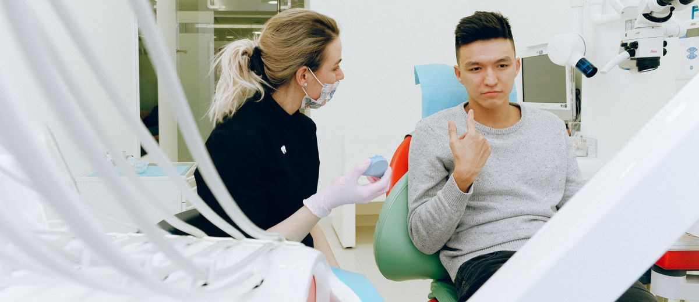

El 40% de tus pacientes nuevos no vuelve. Y no es culpa suya

Entre el 40 y el 45% de los pacientes que entran por primera vez en una clínica dental no vuelven. No se fueron enfadados. No encontraron algo mejor. Simplemente nadie los llamó, y ellos no tomaron la iniciativa de volver.
Eso significa que casi uno de cada dos pacientes nuevos que pagas para captar —con publicidad, con recomendación, con tiempo de recepción— se evapora después de la primera visita.
No porque hayas hecho algo mal. Porque no hiciste nada después.
El problema no es la captación. Es la retención
La mayoría de las clínicas dentales que se quejan de "pocos pacientes" tienen un problema mal diagnosticado. No les falta captación. Les falta un sistema que retenga a los pacientes que ya entraron.
La diferencia entre una clínica que capta 50 pacientes nuevos al mes y retiene el 60%, y otra que capta 80 y retiene el 55%, no siempre está donde parece. En el primer año, la segunda clínica tiene más altas. En el tercer año, la primera tiene más base activa.
El coste de adquisición de un paciente nuevo oscila entre 80 y 200 euros dependiendo del canal. El coste de retener a uno que ya entró: una llamada de dos minutos en el momento adecuado.
El 40-45% de pacientes nuevos no regresa. Con protocolo activo de seguimiento, esa cifra baja al 20-25%. No es magia: es una llamada que alguien tiene que hacer.
Por qué no los llama nadie
La respuesta más habitual es "no tenemos tiempo". Pero si se analiza el proceso, la realidad es otra: no hay un protocolo. No está escrito quién llama, cuándo, qué dice y dónde registra la respuesta.
En la mayoría de clínicas, el seguimiento post-primera visita depende de que alguien se acuerde. Y cuando la agenda aprieta —que es casi siempre—, nadie se acuerda.
- No hay una lista. Los pacientes que vinieron por primera vez hace 15 días no están en ningún sitio diferenciado. Están mezclados con todos los demás en el software de gestión, sin filtro que los señale.
- No hay un guion. La auxiliar no sabe qué decir exactamente. Improvisarlo es incómodo, así que no llama.
- No hay un responsable. "Alguien debería llamarles" es la versión corporativa de que no los llama nadie.
El protocolo mínimo que funciona
No hace falta un CRM sofisticado ni formación de dos días para empezar. Hay tres acciones que, ejecutadas de forma consistente, cambian el porcentaje de retención:
- Llamada a los 7 días. No para preguntar si le dolió. Para preguntar si tiene dudas sobre el siguiente paso del tratamiento o la revisión programada. Dos minutos. La hace la auxiliar o recepcionista, no el dentista.
- Recordatorio de revisión a los 12 meses. Personalizado, con el nombre del paciente y la fecha de su última visita. No un SMS genérico de "te echamos de menos". Una frase que demuestre que la clínica recuerda quién es.
- Registro del resultado. Si llamó y no cogió, ¿se volvió a llamar? ¿Cuándo? ¿Qué dijo? Sin registro, el protocolo no existe: es una intención.
Lo que hacen las clínicas que retienen bien
Las clínicas dentales con sistemas de seguimiento documentados consiguen tasas de retención del 75-80% en pacientes de primera visita. El doble de lo habitual.
Lo que las diferencia no es tecnología ni presupuesto. Es que el protocolo existe fuera de la cabeza del dentista: está escrito, tiene un responsable y se ejecuta aunque el dentista ese día esté ocupado.
La primera visita es una inversión. El seguimiento es lo que decide si esa inversión produce o se evapora.
Una reflexión para el dueño de la clínica
Si tienes 200 primeras visitas al año y retienes el 60%, tu base activa crece en 120 pacientes. Si retienes el 75%, crece en 150. Treinta pacientes más al año, con el mismo gasto de captación.
En tres años, esa diferencia de 15 puntos porcentuales se convierte en 90 pacientes activos adicionales. A 380 euros de gasto medio anual por paciente, son más de 34.000 euros en facturación recurrente.
Sin aumentar el presupuesto de captación. Sin más publicidad. Con una llamada que alguien tiene que hacer.
Fuente: benchmarks de gestión dental / datos EBA / análisis interno de clínicas en consultoría.